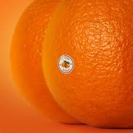

좋아하는 팝송


안녕하세요, 저는 여행, 음악, 책, 운동, 술, 기록, 그리고 사람을 좋아하는, 관심사가 많은 미소입니다. 하고 싶은 것이 많지만, 시간과 체력이 한정적이라 모든 것을 다 하지는 못해요. 그래도 하나씩 차근차근 이뤄 나가려고 합니다. 예전에는 여행에 특히 관심이 많았고, 요즘은 수어를 조금씩 배우고 있어요.
개발자로서는 단순히 코드를 작성하는 것이 아니라, 왜 그렇게 해야 하는지 깊이 고민하는 개발자가 되기 위해 노력하고 있습니다. 또한, 문제를 끝까지 파고드는 끈기를 강점으로 삼아, 더 나은 해결책을 찾고자 합니다. 최근에는 개발자로서 성장하는 방향에 대해 고민하며 꾸준히 나아가고 있습니다.
"인간관계론"은 다양한 사례를 통해 인생을 살아가면서 사람을 대하는 자세에 대해 깊이 깨닫게 해주는 책이에요. 이 책은 실생활에 적용할 수 있는 원칙들을 사례를 통해 자연스럽게 제시합니다. 데일 카네기의 "자기관리론"이 더 유명해 상대적으로 덜 알려졌지만, 꼭 한 번 읽어보시길 추천합니다!
"미움 받을 용기"는 개발자로서 끊임없이 "왜?"라는 질문을 던지는 태도와 닮은 사고방식을 길러주는 철학적인 책입니다. 두 명의 철학자가 대화를 나누는 형식으로 전개되며, 기존의 사고방식을 깨고 정답이 아닌 다양한 관점에서 사고할 수 있게 해주는 책이에요.
"듄"은 압도적인 스케일을 자랑하는 SF 영화입니다. 영화관에서 봤을 때의 웅장한 사운드와 몰입감 있는 연출의 충격이 아직도 생생한 것 같아요. 흥미진진한 스토리와 세계관 덕분에 인상 깊게 즐긴 작품 중 하나였습니다. 스토리가 다소 난해한 만큼 다양한 해석과 의견을 접할 수 있어서 흥미로웠어요. SF 영화를 좋아한다면 꼭 보시길 추천합니다. (저는 듄: 파트 2는 두 번이나 봤습니다!)